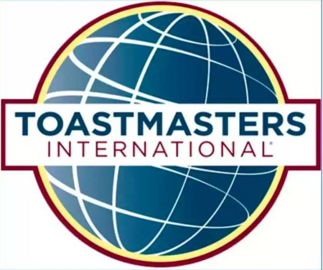
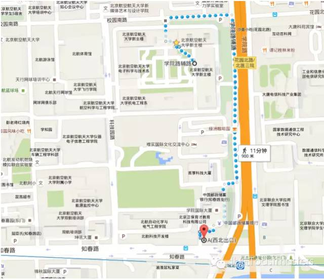

Time：19:30-21:30, Friday, April 21st
Venue: Room B104, New Main Building, Beihang University.

Table topic
Love
Toastmaster: Fiona
Table Topics Master: Carrie
Love is a variety of different feelings, states, and attitudes that ranges from affection ("I love my mother") to pleasure ("I loved that meal"). It can refer to an emotion of a strong attraction and personal attachment. Love can also be a virtue representing human kindness, compassion, and affection—"the unselfish loyal and benevolent concern for the good of another". It may also describe compassionate and affectionate actions to other humans, one's self or animals.
Prepared Speech (CC)
Speaker 1: Flair CC2－－
How I choose my friend
How do you choose your friends when you feel sad or helpless? How do you choose your girlfriend when your feel lonely? In those questions, Do you have some special opinions? Flair wants to say some him own thoughts of how he chose his friends in his life. Did he have girlfriend?Did he have some special best friends? He will delivere his CC2 speech to all the audience. If you want to make friends with Flair, This is your opportunity to announce your own opinions. Let’s us wait and see!
Speaker 2: Rocky CC2－－
Happy birthday my school
Hansome boy Rocky said he had a lot to appreciate, but this time he would firstly send his wishes and appreciation to his university where he lives, at a perspective of his own. just like a man prepared a confession to his beloved, will you miss it?
What is Toastmasters?

Toastmasters International (TI) is a non-profit educational organization that operates clubs worldwide for thepurpose of helping members improve their communication, public speaking, and leadership skills.
You can find us by the following map of Beihang University.

https://mp.weixin.qq.com/s/lzLqNS4zTqNaLVdkJ6js0Q
本页为抢救式本地归档，图文已永久保存。